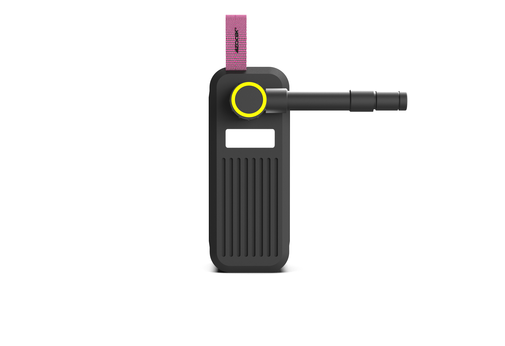
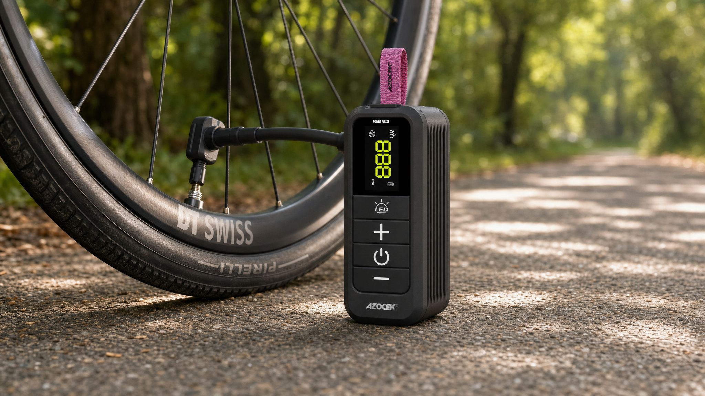
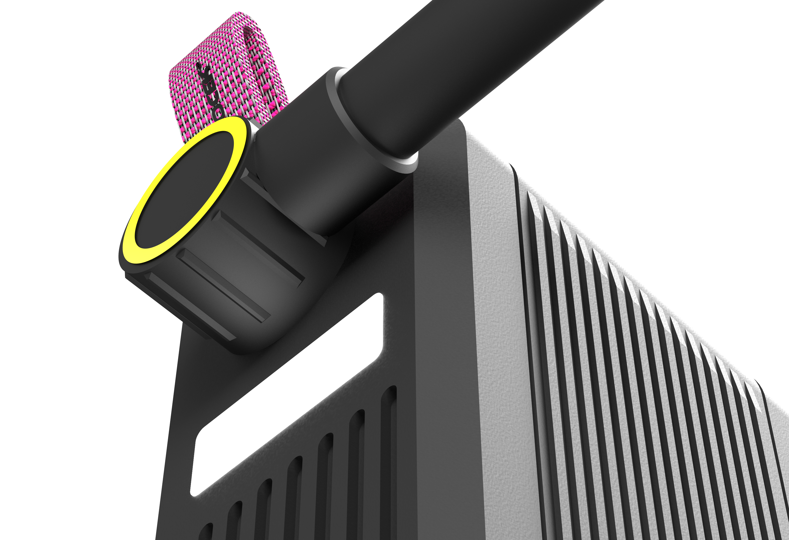
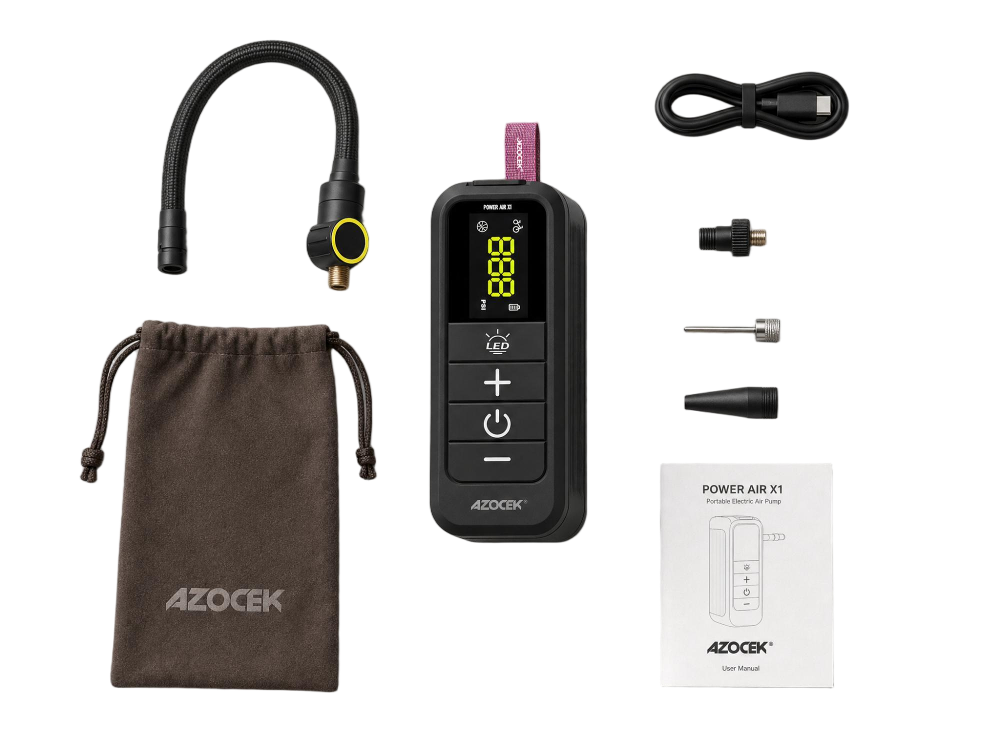
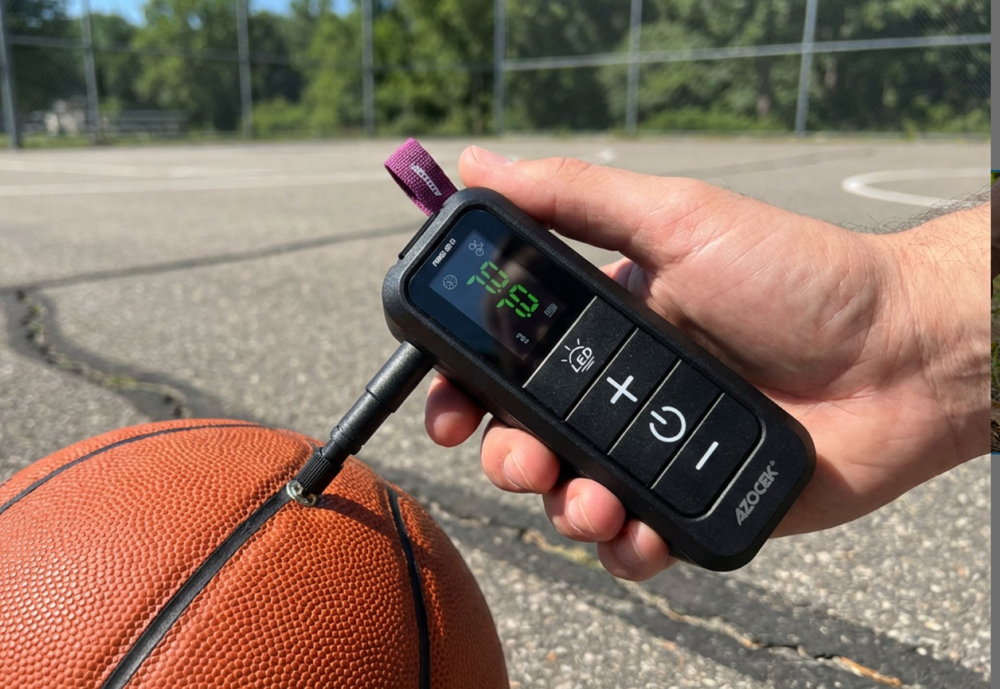
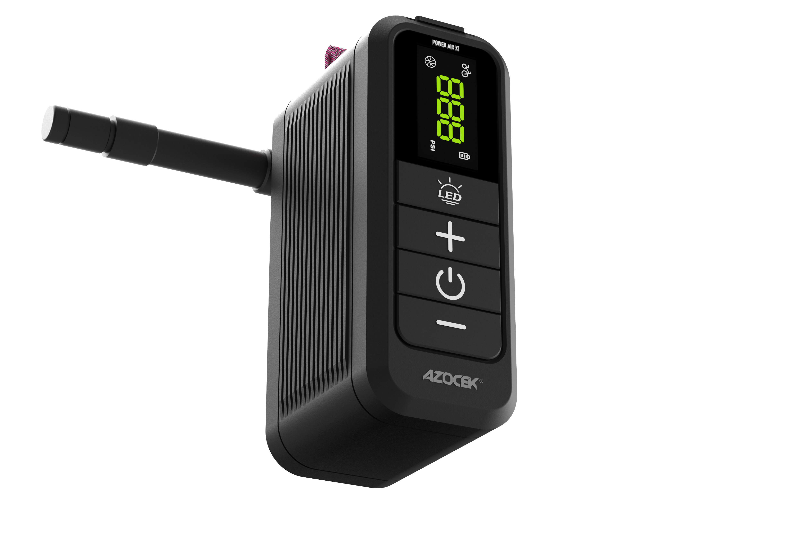

2025 / 外观设计
AS15
Air shock自行车充气泵
口袋式锂电便携数显充气泵，面向自驾车主、骑行爱好者、户外运动人群打造，兼顾汽车轮胎、电动车、自行车、篮球、充气床垫等多品类充气需求
整机高度集成数显胎压监测、预设智能充停、背部独立 LED 应急照明、内置锂电续航、伸缩气嘴、轻量化便携结构六大功能，解决传统车载充气泵体积笨重、有线束缚、夜间胎压检修无光、操作复杂等痛点，是随车、户外随身的多功能一体式充气工具。

整体极简纯黑工具风，线条利落克制，适配车内、户外工装场景低调实用的视觉需求，顶部搭配彩色编织挂绳，兼顾便携悬挂与视觉点缀。

哑光黑色高韧性 ABS 一体成型机身，表面细腻磨砂抗指纹、耐刮耐磨，车内颠簸磕碰不易留下划痕；机身侧边采用竖向平行散热筋一体注塑成型，强化机身结构强度的同时构建对流散热风道；边角做圆润R角缓冲处理，握持无硌手感

机身背部内置一体式 LED 泛光灯，独立灯光控制回路，可脱离充气主机单独开启使用。夜间更换备胎、胎压检测、户外露营、车辆故障检修时提供大面积柔光补光，无需额外携带手电


机身上部嵌入式大尺寸高亮数码屏，采用黄色 / 绿色高对比度数码管显示，强光户外、昏暗车库均可清晰读取

屏幕下方竖向排布四枚独立下沉式功能按键，图标直观易懂，戴手套也可精准按压操作

机身两侧全覆盖竖向立体散热筋，内部微型气泵工作时形成贯穿式上下对流风道，快速排出电机运转产生的热量

机身顶端预留挂绳孔，搭配耐磨编织挂绳，可悬挂于车内扶手、骑行背包、帐篷挂钩，随取随用，避免工具随意滚落丢失

附带多种气嘴类型，满足多场景使用。


左右拖拽画面，360°全方位查看Air shock自行车充气泵整机